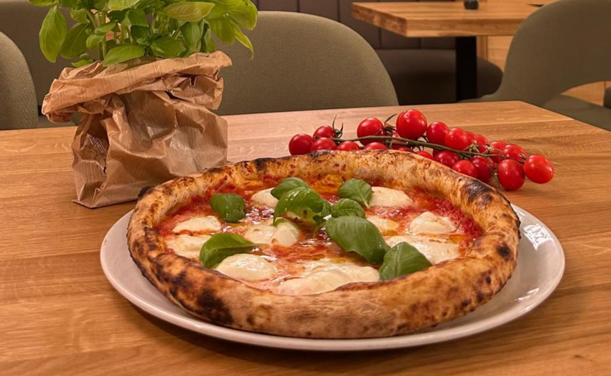
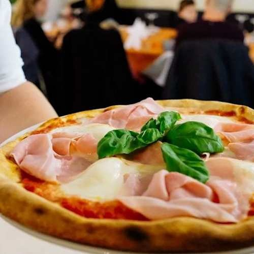

PIZZERIA CHEF · TRENTO
La tua pizza.
Il tuo posto
in centro.
Una pizza, le persone giuste, una serata da ricordare.
Ci trovi in Largo Carducci, 31.
IN SALA, O DA PORTARE CON TE.

CHEFMADE WITH LOVE.
PIZZERIA
CHEFMade with love.
CHEFMade with love.
9,3/10
La valutazione di Chef su TheForkRiscontro pubblico del 13 novembre 2026
Una reputazione che nasce
da chi si è già seduto qui.

CHEF · MADE WITH LOVE
SCEGLI COME VIVERE CHEF
A tavola
A tavola
o da asporto?
Prenota per una serata in centro oppure scegli la tua pizza e l’orario di ritiro. Il tuo prossimo momento da Chef comincia qui.
Largo Carducci, 31
Apri la posizione su Google Maps
e scegli il tuo percorso.
L’ANTEPRIMA PER LA GESTIONEUn sito più semplice.
Scopri le due alternative ↗Un sito più semplice.
Anche dietro le quinte.
Questa è una prima direzione, personalizzabile su Chef. Per gestire prenotazioni e ordini puoi partire leggero, oppure scegliere una piattaforma completa.